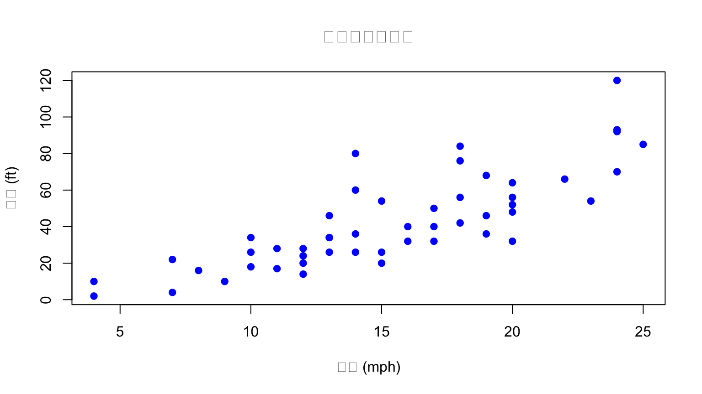
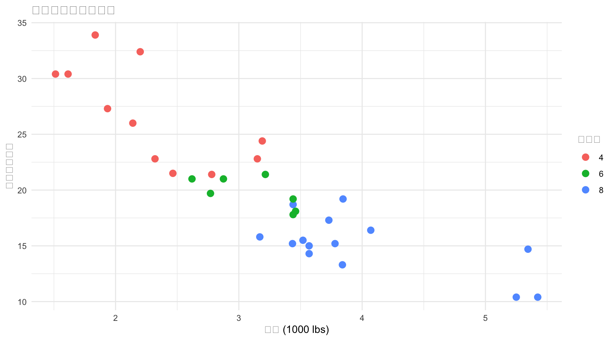
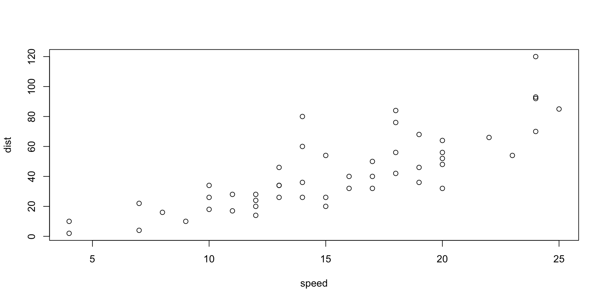

speed dist
Min. : 4.0 Min. : 2.00
1st Qu.:12.0 1st Qu.: 26.00
Median :15.0 Median : 36.00
Mean :15.4 Mean : 42.98
3rd Qu.:19.0 3rd Qu.: 56.00
Max. :25.0 Max. :120.00 R Markdown与现代报告工具
撰写可重复性研究报告
王诗翔 副教授
中南大学生物医学信息系
中南大学生物医学信息系
本讲目标
你将学会：
- ✅ Markdown基础语法
- ✅ R Markdown文档结构
- ✅ 代码块与输出控制
- ✅ 图表与表格插入
- ✅ 交叉引用
- ✅ Quarto现代工作流
为什么重要？
🔄 可重复性 — 分析可完全复现
📄 自动化 — 代码与文档同步更新
🎯 专业性 — 规范的科研报告
🚀 高效性 — 一处修改，全局更新
第1部分：Markdown基础
什么是Markdown？
Markdown是一种轻量级标记语言，让你用纯文本编写格式化的文档
设计哲学
“The overriding design goal for Markdown’s formatting syntax is to make it as readable as possible.”
— John Gruber
优势
- ✅ 纯文本，随处可编辑
- ✅ 易读易写
- ✅ 转换为HTML、PDF、Word等
基础语法速查
格式
提示
Markdown有标准语法和扩展语法（如GFM、Pandoc），R Markdown支持大多数扩展
代码块
行内代码
使用 print() 函数输出结果
代码块
LaTeX公式
行内公式
\(E = mc^2\)
独立公式
\[ \bar{x} = \frac{1}{n}\sum_{i=1}^{n}x_i \]
第2部分：R Markdown入门
什么是R Markdown？
R Markdown = R代码 + Markdown文本 → 动态报告
工作流程
.Rmd 文件 → knitr → Markdown → pandoc → HTML/PDF/Word
↑_________________________________________|
(数据更新后重新编译)核心优势
- 动态报告 — 数据变化，报告自动更新
- 可重复性 — 他人可完全复现你的分析
- 多格式输出 — 一份源码，多种格式
文档结构
speed dist
Min. : 4.0 Min. : 2.00
1st Qu.:12.0 1st Qu.: 26.00
Median :15.0 Median : 36.00
Mean :15.4 Mean : 42.98
3rd Qu.:19.0 3rd Qu.: 56.00
Max. :25.0 Max. :120.00 :::
结果会自动插入…
---
## YAML元数据
```yaml
---
title: "研究标题"
subtitle: "副标题"
author:
- "王诗翔"
- "李四"
date: "2025-02-27"
output:
html_document:
toc: true
code_folding: hide
theme: cerulean
---Note
YAML位于文档开头，用 --- 包围，控制文档的全局设置
R代码块
基本语法
常用选项
| 选项 | 说明 | 示例 |
|---|---|---|
echo |
显示代码 | echo=TRUE |
eval |
执行代码 | eval=TRUE |
results |
输出方式 | results='markup' |
fig.width |
图宽 | fig.width=8 |
warning |
显示警告 | warning=FALSE |
代码块演示
隐藏代码，只显示结果
显示代码和结果
内联代码
在文本中嵌入R代码结果，实现动态更新
数据集包含 50 个观测值， 平均速度为 15.4 mph。
应用场景
- 自动更新样本量、P值、统计量
- 确保正文与表格数据一致
- 多组比较时自动调整描述
图表输出
基础图形

ggplot2 图形

表格制作
knitr::kable
| mpg | cyl | disp | hp | drat | |
|---|---|---|---|---|---|
| Mazda RX4 | 21.0 | 6 | 160 | 110 | 3.90 |
| Mazda RX4 Wag | 21.0 | 6 | 160 | 110 | 3.90 |
| Datsun 710 | 22.8 | 4 | 108 | 93 | 3.85 |
| Hornet 4 Drive | 21.4 | 6 | 258 | 110 | 3.08 |
| Hornet Sportabout | 18.7 | 8 | 360 | 175 | 3.15 |
参数化报告
使用参数创建多版本报告
### 应用场景
- 不同批次数据的相同分析
- 不同参数敏感性分析
- 多中心研究的各中心报告
---
# 第3部分：Quarto —— 下一代工具
---
## 什么是Quarto？
> Quarto是Posit开发的**开源科学出版系统**，统一R Markdown、Jupyter等格式
### 与R Markdown的关系
R Markdown → Quarto → 统一的多语言平台 ↓ ↓ 仅支持R R + Python + Julia + Observable
### 核心优势
- 🌐 **多语言支持** — 不限于R
- 📱 **响应式设计** — 移动端友好
- 🎨 **现代外观** — 更美观的默认样式
- 🔧 **统一语法** — 简化学习成本
---
## Quarto文档结构
```markdown
---
title: "Quarto演示"
format:
html:
code-fold: true
code-tools: true
jupyter: python3 # 可以是 python3, ir, julia-1.9
---
## Python代码
```python
import pandas as pd
df = pd.DataFrame({'x': [1, 2, 3], 'y': [4, 5, 6]})
dfR代码
mpg cyl disp hp drat wt qsec vs am gear carb
Mazda RX4 21.0 6 160 110 3.90 2.620 16.46 0 1 4 4
Mazda RX4 Wag 21.0 6 160 110 3.90 2.875 17.02 0 1 4 4
Datsun 710 22.8 4 108 93 3.85 2.320 18.61 1 1 4 1
---
## Quarto vs R Markdown 语法对比
| 功能 | R Markdown | Quarto |
|------|------------|--------|
| 代码块选项 | `{r, echo=FALSE}` | `#| echo: false` |
| 图宽 | `fig.width=8` | `#| fig-width: 8` |
| 表格 | `knitr::kable()` | 自动美化 |
| 交叉引用 | 需要包 | 原生支持 |
| Callout | 需自定义 | 原生 `.callout` |
---
## 交叉引用 {.smaller}
### 图表引用
```markdown
见 @fig-scatter 显示了速度与距离的关系。
::: {.cell}
```{.r .cell-code}
plot(cars)
:::
### 表格引用
```markdown
如 @tbl-summary 所示...
::: {#tbl-summary .cell tbl-cap='描述统计'}
```{.r .cell-code}
knitr::kable(summary(cars))| speed | dist | |
|---|---|---|
| Min. : 4.0 | Min. : 2.00 | |
| 1st Qu.:12.0 | 1st Qu.: 26.00 | |
| Median :15.0 | Median : 36.00 | |
| Mean :15.4 | Mean : 42.98 | |
| 3rd Qu.:19.0 | 3rd Qu.: 56.00 | |
| Max. :25.0 | Max. :120.00 |
:::
### 章节引用
```markdown
详见 @sec-methods 方法部分。
## 方法 {#sec-methods}文档类型
Quarto支持多种文档类型：
| 类型 | 命令 | 用途 |
|---|---|---|
| Document | format: html/pdf/docx |
科研论文 |
| Presentation | format: revealjs/beamer |
幻灯片 |
| Website | quarto render |
项目网站 |
| Book | project: type: book |
专著/教材 |
| Dashboard | format: dashboard |
数据看板 |
第4部分：最佳实践
可重复性研究原则
1. 环境记录
2. 项目结构
project/
├── data/ # 原始数据
├── analysis/ # 分析脚本
├── output/ # 结果输出
├── figures/ # 图表
├── report.qmd # 主报告
└── renv.lock # 环境锁定代码规范
命名规范
文档注释
本讲小结
Markdown
- 轻量级标记语言
- 标题、格式、列表、表格
- 代码块、LaTeX公式
R Markdown
.Rmd= 代码 + 文本- YAML元数据
- 代码块选项
- 内联代码
- 参数化报告
Quarto
- 下一代科学出版系统
- 多语言支持
- 原生交叉引用
- 现代美观
最佳实践
- 可重复性原则
- 版本控制 (Git)
- 环境管理 (renv)
- 规范的项目结构
练习与思考
- Markdown练习
- 用Markdown写一段自我介绍
- 包含列表、链接、代码块
- R Markdown练习
- 创建一个分析mtcars数据的报告
- 包含代码、图表、表格
- 使用内联代码显示统计结果
- Quarto探索
- 将R Markdown转换为Quarto
- 尝试添加交叉引用
- 思考
- 如何保证分析的可重复性？
- 在什么情况下选择Quarto而非R Markdown？
课程总结
从数据到报告
完整流程
数据导入 → 清洗处理 → 统计分析 → 可视化 → R Markdown/Quarto → 专业报告核心能力
- 用 R 处理和分析数据
- 用 tidyverse 高效编程
- 用 R Markdown/Quarto 撰写报告
- 遵循 可重复性 研究原则
谢谢！
开始你的实验吧！
王诗翔 副教授
中南大学生物医学信息系
📧 shixiang.wang@csu.edu.cn
🐙 https://github.com/ShixiangWang
下节课预告：实验指导
- R基础编程练习
- R Markdown报告编写

R与(R)Markdown基础 | 中南大学